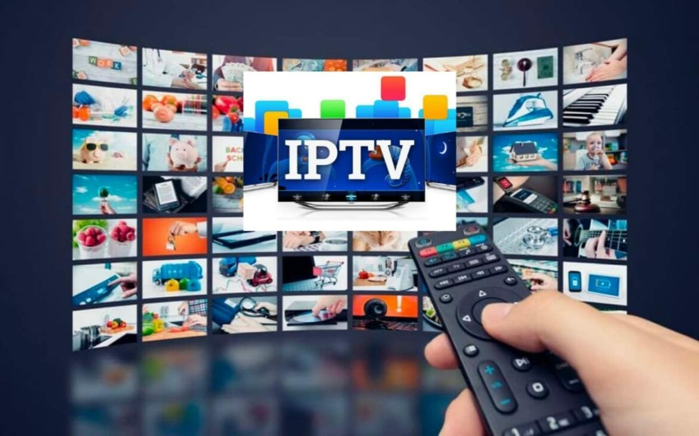
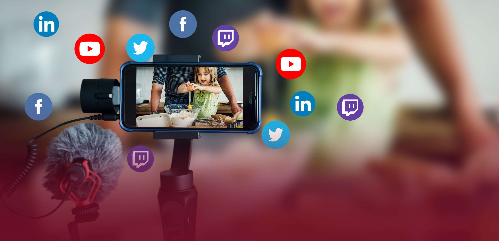
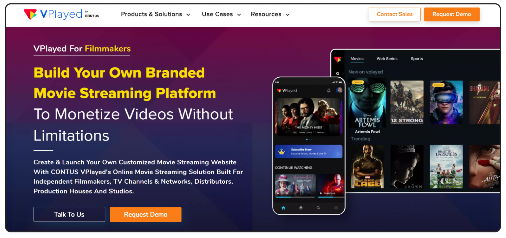

La transmisión por streaming, también llamada transmisión en directo, en continuo o en descarga continua, es un método de distribución de contenidos multimedia (audiovisuales) a través de redes informáticas, que transmite el contenido al instante mismo en que es consumido, sin que deba descargarse y almacenarse previamente. El término streaming proviene del inglés stream (“chorro” o “arroyo”) y hace alusión a la transmisión ininterrumpida del contenido audiovisual. La transmisión de contenidos comerciales vía streaming se popularizó luego del año 2000 en el mundo entero, a medida que los servicios de ancho de banda permitían igualar la tasa de transmisión de datos necesaria para transmitir series, películas, podcasts y otros contenidos diferidos (o sea, grabados previamente) o bien diferentes servicios de televisión en vivo y directo. A diferencia de las emisiones televisivas o radiales tradicionales, contó con la virtud de que el usuario puede elegir qué contenido ver y cuándo. Para tener acceso a este tipo de servicios se necesita una conexión a internet y uno o varios dispositivos capaces de reproducir audio y video, como televisores inteligentes, tablets, teléfonos inteligentes o computadoras. El éxito de esta tecnología, por lo tanto, va de la mano del incremento en el consumo de este tipo de aparatos, y de la mejoría en la capacidad de transmisión de datos de manera inalámbrica (4G y 5G).

El principio básico de la transmisión por streaming no es nuevo, ya en 1920 el sistema Muzak de música de fondo inventado por el militar estadounidense George Owen Squier (1865-1934) operaba en base a la transmisión continua de impulsos eléctricos, pero la tecnología de ese entonces no permitía su aprovechamiento; al menos no en los términos en que finalmente se dio en la década de 1990. El streaming se dio a conocer entre las masas en 1994, gracias a un concierto de la banda británica de rock The Rolling Stones, quienes el 18 de noviembre transmitieron en directo un extracto de 20 minutos de su concierto en Dallas, Estados Unidos, como parte de una promoción de servicios de contenidos por pago de la cadena Showtime. Esta transmisión fue posible gracias a la tecnología Multicast Bone (MBone), inventada en 1992 para transmitir conferencias académicas. Posteriormente, en 1995, apareció RealAudio 1.0, un formato de audio que facilitaba y aligeraba el streaming de audio por internet, lo que tuvo un impacto masivo en las telecomunicaciones digitales y demostró la virtud del sistema de buffering o almacenamiento temporario de los contenidos para su disfrute casi instantáneo. Sin embargo, las verdaderas capacidades de esta tecnología se pusieron a prueba con éxito gracias a la red social YouTube, aparecida en 2005 y dedicada a transmitir contenidos audiovisuales por internet. En los años posteriores aparecieron los gigantes de la industria del entretenimiento vía streaming, tanto en el área televisiva y cinematográfica, como en los videojuegos, la radio online y los podcasts.
La transmisión por streaming funciona del mismo modo que cualquier otra transmisión de datos digitales, pero en lugar de requerir la descarga completa del contenido para proceder entonces a su reproducción, los servicios streaming cuentan con un búfer de datos, o sea, un espacio de memoria informática dedicado al almacenamiento temporal de información, donde se acumula el contenido para su inmediata transmisión, de manera que no se produzcan interrupciones. Así, los datos son transmitidos, recibidos y reproducidos rápidamente, siempre y cuando el ancho de banda del servicio de internet iguale o supere la tasa de transmisión de la información. Por ende, mientras más voluminosos sean los paquetes de datos (por ejemplo, si la calidad del video se configura al máximo), más información por segundo habrá que procesar, almacenar y reproducir.

Algunas de las plataformas más populares de venta de contenido a través de transmisión en directo o streaming son las siguientes: YouTube. Es una de las plataformas pioneras en el negocio del streaming de audio y video, y consiste en una vasta red social que almacena y reproduce continuamente las grabaciones de sus usuarios, ya se trate de programas autoproducidos, mensajes publicitarios, etc. Netflix. Es una de las plataformas de streaming más populares, y ofrece a sus suscriptores acceso a miles de series, filmes y cortometrajes para consumir directamente. Su éxito ha sido tal, que muchos televisores inteligentes ya tienen botones para Netflix en sus controles remotos. Disney+. Dirigido al público infantil y juvenil mayoritariamente, este servicio de streaming de contenidos propios de la marca Disney (o sus marcas asociadas, como Pixar, Marvel o Star Wars) fue fundado en 2019 y ofrecido al público en medio de un auge de plataformas de este tipo, vinculado con las restricciones de movilidad por la pandemia de covid-19 iniciada en 2020. Vimeo. Es una plataforma de carga y streaming de videos fundada en 2004 y que opera como una red social, cuyas altas tasas de bits y alta resolución de video le ganaron la popularidad entre los artistas del mundo musical, como sitio en el que hospedar y distribuir conciertos y videoclips. HBOMax. Propiedad de la empresa de producción y distribución cinematográfica HBO, esta plataforma de streaming tuvo su lanzamiento en 2020 y rápidamente se convirtió en una de las de mayor demanda en un sector comercial altamente disputado, ya que sus contenidos no se limitan a los producidos por la empresa. Google Cloud Streaming. Es el servicio de streaming de datos de Google, que surgió en 2008 como una alternativa al almacenamiento de aplicaciones en la computadora, que puede en cambio ejecutarlas directamente desde la nube, o sea, a través de internet. En ese sentido, Google Cloud es un entorno virtual que envía y recibe datos aprovechando la tecnología del streaming.
